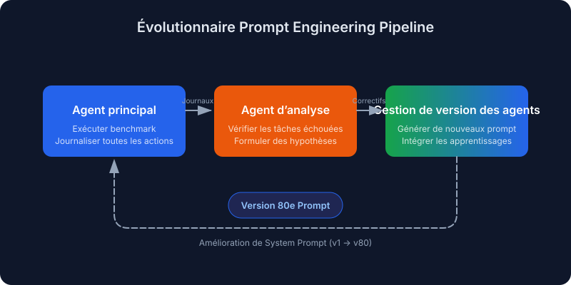
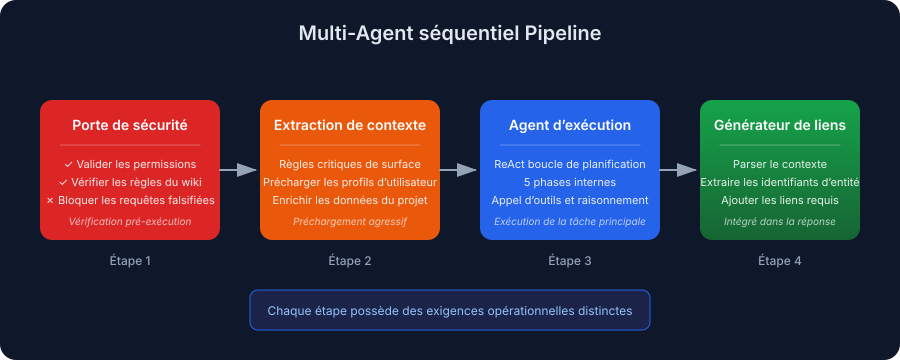
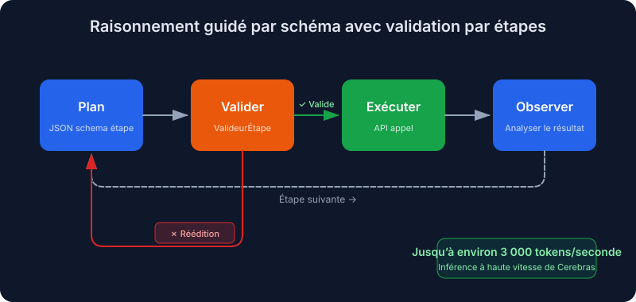
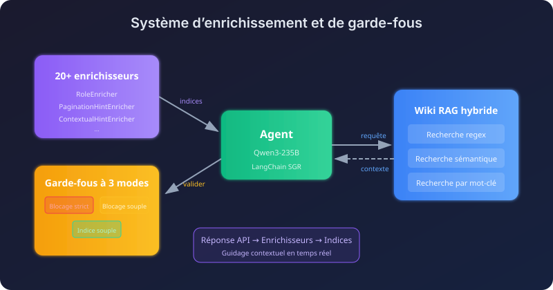
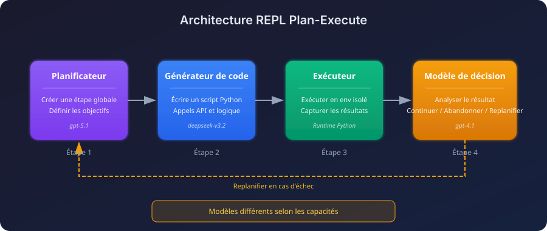
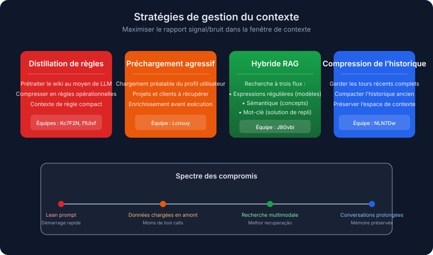
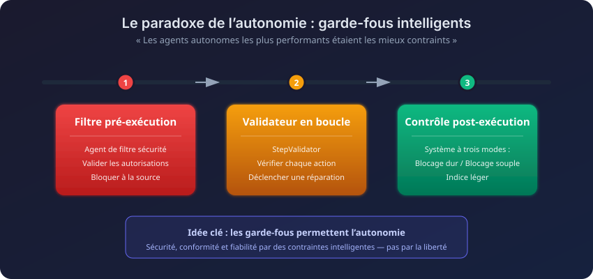

Traduction automatique
Cet article a été traduit automatiquement depuis la version originale en anglais.
Défi Enterprise RAG 3 (ECR3) : Architectures gagnantes d’agents IA
Le Défi Enterprise RAG 3 (ECR3) vient de se terminer. 524 équipes, plus de 341 000 exécutions d’agents, et seulement 0,4 % des équipes ont obtenu une note parfaite. Maintenant que le classement et les analyses sont accessibles au public, j’ai examiné les solutions gagnantes afin de comprendre en quoi les meilleures équipes se distinguaient.
Cet article explique ce qu’est l’ECR3, à quoi ressemblaient les tâches, ainsi que les schémas récurrents que j’ai observés dans les architectures qui ont fonctionné.
En résumé : Les pipelines multi-agents surpassent ceux de type monolithique. L’équipe gagnante a mis en œuvre une ingénierie de prompts évolutive au cours de plus de 80 itérations automatisées. Les vainqueurs ont consacré beaucoup d’efforts aux mécanismes de contrôle (vérifications de sécurité avant exécution, validateurs en temps réel, protections après exécution) ainsi qu’à la stratégie de gestion du contexte. La qualité des informations intégrées dans le contexte était plus importante que leur quantité.
Qu’est-ce que le Enterprise RAG Challenge ?
Le Enterprise RAG Challenge 3 est un projet de recherche à grande échelle et collaboratif qui teste la manière dont les agents IA autonomes gèrent des tâches métier complexes. Contrairement aux benchmarks statiques, ECR3 s’exécute sur la Agentic Enterprise Simulation (AGES), une simulation d’événements discrets qui expose un API d’entreprise réaliste.
Pourquoi ECR3 est important
Grâce à AGES, les agents interagissent au sein d’une entreprise virtuelle qui dispose de :
- Des profils d’employés présentant des compétences et des départements spécifiques
- Des projets avec des affectations d’équipe et des relations clients
- Une wiki d’entreprise contenant des règles métier et des hiérarchies d’autorisation
- Un suivi du temps et des opérations financières
Chaque tâche lance sa propre simulation à l’aide de données fraîches, ce qui empêche les agents de mémoriser quoi que ce soit entre deux exécutions.
La barre de difficulté
La classement est sévère :
| Métrique | Valeur |
|---|---|
| Équipes enregistrées | 524 |
| Nombre total d’exécutions de l’agent | 341,000+ |
| Tâches disponibles | 103 tâches métier uniques |
| Score parfait (100,0) | Uniquement 0,4 % des équipes |
| Score ≥ 0.9 | Uniquement 1,1 % des équipes |
Types de tâches
Les tâches couvrent plusieurs domaines de compétences :
- Raisonnement multi-niveaux : Établir des liens entre les compétences des employés et les affectations aux projets
- Vérification des permissions : Empêcher les modifications non autorisées des salaires ou l’accès aux données
- Consultes ambiguës : Gérer les requêtes des utilisateurs en plusieurs langues ainsi que celles reformulées
- Conformité stricte des sorties : Intégrer obligatoirement des liens vers les entités dans les réponses
Ce qui a vraiment remporté la victoire
Quatre schémas réapparaissaient constamment en tête du classement :
- Les pipelines multi-agents surpassent les agents monolithiques. Diviser la tâche en plusieurs parties s’est avéré plus efficace qu’un seul agent géant tentant de tout gérer.
- Les agents les plus autonomes étaient aussi ceux les plus contraints. Les règles de contrôle n’étaient pas ajoutées à la hâte.
- L’évolution automatisée des prompts bat l’ingénierie manuelle. Les meilleurs prompts ont été affinés au cours de plus de 80 générations.
- La stratégie de contexte effectue la majeure partie du travail. Il ne s’agit pas de plus de contexte, mais du bon contexte.
Principales approches gagnantes
Les cinq architectures présentées ci-dessous suivent des directions très différentes, allant d’une évolution complètement automatisée des prompts à une récupération hybride. Chacune d’elles contient des éléments intéressants à reprendre.
1. Ingénierie évolutive des prompts (Équipe VZS9FL / @aostrikov)** l’approche ayant le score le plus élevé Ingénierie automatique de prompts via un cycle d’amélioration continue.

Au lieu de paramétrer manuellement les prompts, l’équipe a développé un cycle à trois agents qui permet à chacun d’eux d’apprendre à partir de ses propres échecs.
Tuyau à trois agents :
| Agent | Rôle |
|---|---|
| Agent principal | Exécute le benchmark et enregistre toutes les actions ainsi que les échecs |
| Agent d’analyse | Évalue les tâches échouées et formule des hypothèses sur leurs causes racines |
| Agent de versionnement | Génère une nouvelle version de la prompt en intégrant les enseignements acquis |
Le résultat : L’instruction de production était le 80e version générée automatiquement. Chaque version corrigeait un schéma d’échec spécifique observé dans les journaux de l’exécution précédente. La plupart de ces cas relevaient de ce type de scénario extrême que l’on ne remarque qu’après avoir examiné en détail un trace d’échec pendant une heure.
Stack : claude-opus-4.5 avec le SDK Python d’Anthropic et l’utilisation native d’outils.
2. Pipeline séquentiel multi-agents (Team Lcnxuy / @andrey_aiweapps)
Cette approche élimine l’agent monolithique au profit d’un pipeline séquentiel composé de spécialistes, chacun suffisamment modeste pour exceller réellement dans sa tâche.

Le pipeline en 4 étapes :
- Agent de contrôle de sécurité : Vérification préalable à l’exécution qui valide les permissions selon les règles du wiki avant que le cycle principal ne démarre.
- Agent d’ extraction de contexte : Il extrait les règles essentielles à partir de prompts volumineux et charge à l’avance les données utilisateur, de projet et du client.
- Agent d’exécution : Planification de type ReAct comprenant 5 phases internes (Identité → Détection des menaces → Collecte d’informations → Validation de l’accès → Exécution).
- LinkGeneratorAgent : Intégré à l’outil de réponse, il analyse le contexte afin d’inclure les liens vers les entités requises.
L’agent LinkGenerator est le point intéressant. Il a permis de résoudre l’un des problèmes... les modes de défaillance les plus courants: un agent qui fournit la bonne réponse mais oublie les liens de référence obligatoires.
Stack : atomic-agents et instructor frameworks utilisant GPT-5.1-Codex-Max, GPT-4.1 et Claude-Sonnet-4.5.
3. Raisonnement guidé par un schéma avec validation étape par étape (Équipe NLN7Dw / Ilia Ris)
Cette équipe a combiné le SGR à des temps d’inférence très rapides ainsi qu’à un validateur en temps réel. La stratégie : de nombreuses décisions prises rapidement et validées valent mieux qu’une seule réponse lente obtenue après mûre réflexion.

Composants clés :
| Composant | Fonction |
|---|---|
| StepValidator | Inspecte chaque étape proposée. Si un élément est incorrect, elle le renvoie afin d’être retravaillé, avec des commentaires explicatifs. |
| Gestion du contexte | Plan complet de la tour précédente, ainsi que l’historique compressé des tours antérieures |
| Enrichissement dynamique | Tire automatiquement le profil de l’utilisateur, les projets et les clients ; filtres basés sur un LLM pour n’injecter que les données pertinentes pour la tâche |
| Enveloppes d’auto-paginage | Tous les points de terminaison de liste renvoient automatiquement des résultats complets. |
L’avantage en termes de vitesse provient du fait d’exécuter sur Cerebras à environ 3 000 tokens/seconde. À ce rythme, l’agent peut se permettre de reconsidérer une étape plutôt que de se contenter d’une première réponse lente provenant d’un modèle plus puissant.
Stack : gpt-oss-120b sur Cerebras, grâce à une implémentation personnalisée de SGR NextStep.
4. Système d’enrichissement et de protection (Équipe J8Gvbi / @mishka)
Ce composant intègre des « indicateurs intelligents » non bloquants ainsi qu’un système de protection hiérarchisé sur une base SGR. Lorsque les réponses API arrivent, les modules d’enrichissement les analysent et indiquent discrètement à l’agent sur quels éléments se concentrer.

Le système d’enrichissement :
Plus que 20 enrichisseurs J’ai examiné les réponses API et injecté des indications contextuelles :
RoleEnricher: "You are LEAD of this project, proceed with update."
PaginationHintEnricher: "next_offset=5 means MORE results! MUST paginate."
Système de protection à trois modes :
| Mode | Comportement |
|---|---|
| Bloc dur | Les actions impossibles sont bloquées de manière permanente |
| Bloc souple | Les actions à risque sont bloquées dès la première tentative, mais autorisées en cas de réessai. |
| Indication douce | Guidance sans blocage |
Wiki hybride RAG : Trois flux de recherche (regex, sémantique, mots-clés) fonctionnant en parallèle, le meilleur résultat pour chaque type de requête étant retenu.
Stack : qwen/qwen3-235b-a22b-2507 sur le LangChain Framework SGR.
5. REPL de planification-exécution (Concept clé de l’équipe : parallélisme)
Cette architecture érige une barrière stricte entre la phase de planification et celle d’exécution, en recourant à un cycle de génération de code. Il s’agit en pratique d’un REPL : l’agent planifie une étape, génère du code, le exécute, puis décide de la prochaine action à entreprendre.

Des modèles différents pour des tâches distinctes : un planificateur s’occupe de la planification, un modèle de génération de code écrit du Python, tandis qu’un modèle de décision plus compact détermine ce qu’il convient de faire après chaque étape.
Configuration multi-modèle :
| Étape | Modèle |
|---|---|
| Planification | openai/gpt-5.1 |
| Génération de code | deepseek/deepseek-v3.2 |
| Décision post-étape | openai/gpt-4.1 |
| Réponse finale | openai/gpt-4.1 |
Le REPL de finalisation d’étapes :
- Le planificateur crée une étape de haut niveau.
- Le modèle de génération de code écrit un script Python pour cela.
- Le script s’exécute dans un contexte isolé.
- Le modèle de décision analyse le résultat et choisit parmi : continuer, interrompre ou replanifier.
Le chemin de réplanification est l’élément qui permet à cette architecture de tenir ses promesses. Lorsqu’une étape échoue partiellement, le modèle de décision peut réécrire le reste du plan au lieu de continuer à fonctionner avec une version défectueuse.
Modèles observés partout
Au-delà des architectures individuelles, quelques habitudes se retrouvaient dans presque toutes les soumissions de premier plan.
La gestion du contexte a effectué la majeure partie du travail
Les équipes les plus performantes ont compris que la qualité du contexte constitue la limite maximale de la performance d’un agent.

| Stratégie | Approche | Idéal pour |
|---|---|---|
| Distillation des règles | Prétraiter le wiki à l’aide d’un LLM en ~320 tokens de résumé | Des prompts efficaces, un démarrage rapide |
| Préchargement agressif | Chargement des données utilisateur/projet/client avant l’exécution | Minimiser les appels aux outils |
| RAG hybride | Flux de recherche par regex, sémantique et mots-clés | Besoins de récupération complexes |
| Compression de l’historique | Maintenir les derniers échanges complets, compresser l’historique plus ancien | Conversations prolongées |
Équilibre à trouver : Équipes Kc7F2N et f1Uixf Il a été constaté que la qualité du contexte prime sur sa quantité. En effet, f1Uixf a observé que la compression de l’historique nuisait aux performances ; c’est pourquoi ils ont conservé l’historique complet et se sont tournés vers des modèles à contexte long.

| Type de garde-fou | Lorsque | Exemple |
|---|---|---|
| Portes de pré-exécution | Avant le démarrage du boucle principale | L’agent du portail de sécurité valide les permissions par rapport aux règles du wiki |
| Vérificateurs en boucle | Pendant le raisonnement | StepValidator vérifie chaque action proposée et déclenche un travail de révision en cas d’anomalie. |
| Garde-fous post-exécution | Avant soumission finale | Le système de protection à trois modes valide l’exactitude complète des réponses. |
Enveloppes d’outils intelligents
Les équipes les plus performantes ont créé des couches d’abstraction autour de l’API brute :
- Pagination automatique : Les wrappers parcourent chaque page et renvoient l’ensemble des données.
- Normalisation floue : la « volonté de voyager » est traduite en
will_travelChamp API. - Outils de raisonnement spécialisés :
think,plan, etcriticOutils pour une délibération contrôlée.
Modes de défaillance courants et la manière dont les gagnants les ont résolus
Même les meilleurs agents présentaient les mêmes points aveugles. Les solutions étaient structurelles, et non des simples ajustements des prompts :
| Mode de défaillance | Description | Correction architecturale |
|---|---|---|
| Contournement des permissions | Exécuter des actions restreintes sans vérifier les permissions de l’utilisateur | Agent de contrôle de sécurité pré-exécution ; séquence obligatoire Identité → Permissions → Exécution |
| Liens d’entité manquants | Réponse textuelle correcte, mais absence des liens de référence requis. | Agent LinkGeneratorEmbedded dans l’outil de réponse |
| Épuisement de la pagination | Traiter uniquement la première page des résultats de la liste | Enveloppes d’auto-pagination pour tous les points de terminaison de liste |
| Boucles d’appel d’outils | Bloqué à appeler répétitivement la même fonctionnalité avec de légères modifications. | Modifier les limites ; modèles axés sur le raisonnement (Qwen3) |
| Surcharge de contexte | Remplir le contexte avec des sections Wiki irrélevantes | Distillation des règles ; filtrage dynamique du contexte |
Ce qu’il convient de retenir
Si vous développez des agents et souhaitez l’appliquer :
- Utilisez des pipelines multi-agents. Les agents monolithiques sont désuets. Les meilleures équipes emploient de 3 à 5 spécialistes pour la sécurité, l’extraction de contexte, la planification et l’exécution.
- Automatisez l’itération des prompts. Le prompt gagnant était la version 80. Une boucle permettra de détecter des schémas d’échec que vous ne repéreriez jamais autrement.
- Accordez une attention réelle aux mécanismes de contrôle. Vérifications de sécurité avant exécution, outils de critique en temps réel pendant l’exécution, et protections après exécution. Les agents qui semblaient les plus autonomes étaient en réalité ceux les plus encadrés.
- Encadrez vos outils. La pagination, l’enrichissement des données et la correspondance floue doivent tous être intégrés dans des enveloppes logicielles. Une équipe a développé plus de 20 outils d’enrichissement capables de surveiller en direct les réponses API.
-
Prenez au sérieux la stratégie de gestion du contexte. Distillation des règles (résumés d’environ 320 tokens), préchargement de données et filtrage dynamique. La vitesse est également un facteur clé. Une équipe parvenait à traiter environ 3 000 tokens par seconde, ce qui lui permettait de replanifier fréquemment. Challenge RAG d’entreprise 3 – Site officiel
- Benchmarks : erc3-prod
- Notes de version
- Le gagnant du défi Enterprise RAG